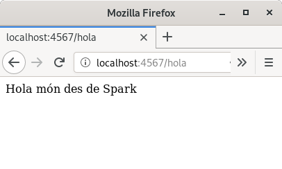

Per fi, hola a Spark¶
Vinga, veiem com funciona la nostra aplicació Web.
El Gradle ens ho farà molt fàcil per executar-ho:
$ gradle run
Després d’una estoneta més o menys curta, en la que Gradle descarregarà
les dependències i compilarà el nostre programa, si tot ha anat bé, ens
acabarà amb un missatge dient que ha arrencat un ServerConnector i si
et fixes una mica indica que està escoltant a 0.0.0.0:4567.
1 2 3 4 5 6 7 8 9 10 11 12 13 14 15 | $ gradle run
> Task :run
[Thread-0] INFO org.eclipse.jetty.util.log - Logging initialized @131ms to org.eclipse.jetty.util.log.Slf4jLog
[Thread-0] WARN org.eclipse.jetty.server.AbstractConnector - Ignoring deprecated socket close linger time
[Thread-0] INFO spark.embeddedserver.jetty.EmbeddedJettyServer - == Spark has ignited ...
[Thread-0] INFO spark.embeddedserver.jetty.EmbeddedJettyServer - >> Listening on 0.0.0.0:4567
[Thread-0] INFO org.eclipse.jetty.server.Server - jetty-9.4.12.v20180830; built: 2018-08-30T13:59:14.071Z; git: 27208684755d94a92186989f695db2d7b21ebc51; jvm 11.0.7+10-post-Debian-3deb10u1
[Thread-0] INFO org.eclipse.jetty.server.session - DefaultSessionIdManager workerName=node0
[Thread-0] INFO org.eclipse.jetty.server.session - No SessionScavenger set, using defaults
[Thread-0] INFO org.eclipse.jetty.server.session - node0 Scavenging every 660000ms
[Thread-0] INFO org.eclipse.jetty.server.AbstractConnector - Started ServerConnector@3671597a{HTTP/1.1,[http/1.1]}{0.0.0.0:4567}
[Thread-0] INFO org.eclipse.jetty.server.Server - Started @257ms
<=========----> 75% EXECUTING [30s]
> :run
|
La consola es quedarà així, incrementant el temps d’execució, esperant
peticions a l’adreça 0.0.0.0:4567 o també localhost:4567.
Doncs apa, arrenca un navegador i carrega la pàgina http://localhost:4567/holaspark
Eh! Ho hem aconseguit! Tenim el nostre servidor Web funcionant amb la nostra aplicació!
No cal que arrenquem un navegador cada cop que volem fer una prova. Per
exemple, la utilitat curl ens permet descarregar-nos el contingut de
la pàgina des de línia de comandes:
$ curl localhost:4567/holaspark
Hola món des de Spark
Per finalitzar l’execució, farem ctrl-c a la consola on hem arrencat
el servidor.
Exercici 4. Programa principal¶
Toca treballar en el projecte de capicua.
En aquesta ocasió tenim una mica de feina. L’objectiu és que afegeixis la ruta necessària perquè la següent comanda tingui el resultat esperat:
$ curl localhost:4567/capicua
La paraula capicua és anna